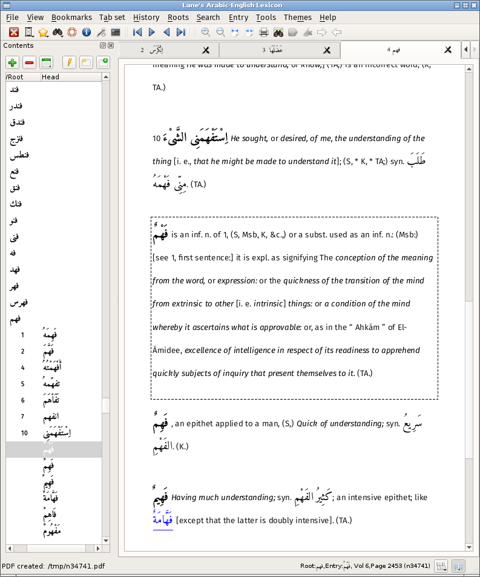

Welcome to the landing page for the desktop version of Edward William Lane's Arabic-English Lexicon.
Quick links
What is it ?
A presentation of Lane's Lexicon based on the digitization work of the Perseus Digital Library. It is a standalone desktop application, not a front-end to the Perseus website.
While PDFs of the original text are free available on the internet, this version offers
- Clearer presentation
- Easy navigation
- Search
- Customization
as well as being, I hope, a little closer to the beauty of the original text.
The screenshot below will give you and idea of what it offers. If you're interested, follow one of the above links. There's a contact page in the documentation if you need to get in touch.
Sample

Project
This repository is one of four that make up the entire project:
- XML - Contains the orginal XML from the Perseus project with amendments
- Parser - Some Perl scripts to parse the XML and load it into the SQLite database that drives the GUI application
- Documentation
The documentation build instructions contains a more detailed description.